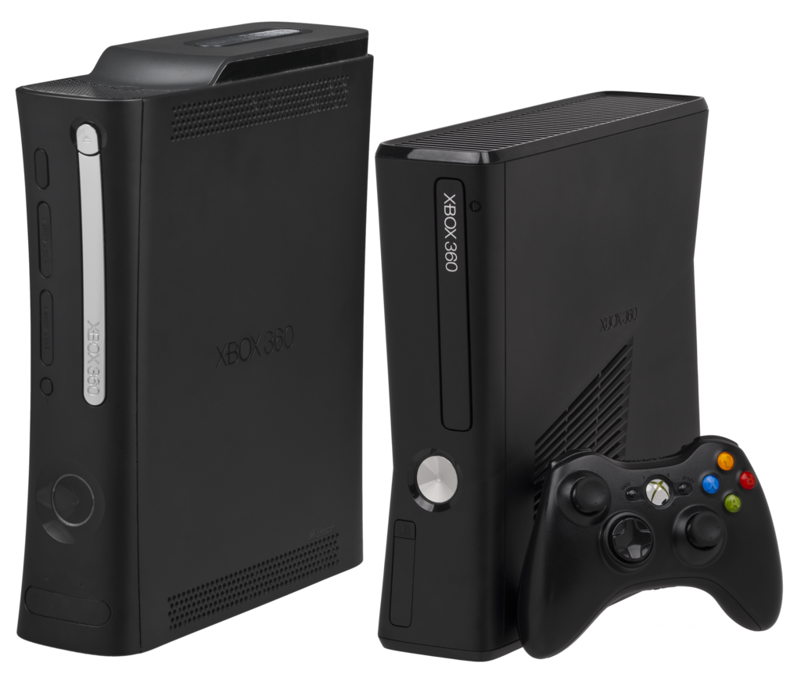

Xbox é uma marca de consoles de jogos eletrônicos desenvolvida e patenteada pela Microsoft. O nome Xbox é incluído em uma série de consoles abrangendo à sexta, sétima, oitava e nona geração de videogames, bem como o serviço on-line Xbox Live, aplicativos, serviços de streaming, Xbox Cloud Gaming e o Xbox Game Pass. A marca foi introduzida pela primeira vez em 15 de novembro de 2001, nos Estados Unidos, com o lançamento do console Xbox.
Logo do Xbox
Consoles
A Microsoft lançou o primeiro console da marca, o Xbox, em 15 de novembro de 2001 nos Estados Unidos. Foi o primeiro console produzido por uma empresa norte-americana desde o Atari Jaguar em 1996. O Xbox foi descontinuado em 2009, após o lançamento do seu sucessor, o Xbox 360, que foi lançado em 2005. O Xbox 360 foi o console de maior sucesso da marca, vendendo mais de 84 milhões de unidades em todo o mundo. O Xbox One foi lançado em 2013 e foi sucedido pelo Xbox Series X e Series S em 2020.
Xbox
O Xbox é um console de vídeo game produzido pela Microsoft. Foi lançado em 15 de novembro de 2001 na América do Norte, 22 de fevereiro de 2002 no Japão, e 14 de Março de 2002 na Austrália e Europa. Foi a primeira incursão da Microsoft no mercado de vídeo games. Como parte da sexta-geração de jogos, o Xbox competiu com Sony PlayStation 2, Sega Dreamcast (que parou as vendas americanas antes que o Xbox fosse colocado à venda) e o Nintendo GameCube. O Xbox foi o primeiro console oferecido por uma empresa norte-americana após o Atari Jaguar parar as vendas em 1996. O nome Xbox foi derivado a partir de uma contração da caixa "DirectX Box", uma referência a Microsoft.
Xbox 360
O Xbox 360 é o segundo console de videogame desenvolvido e produzido pela Microsoft e sendo o sucessor do Xbox. O Xbox 360 concorreu com Sony PlayStation 3 e Nintendo Wii, como parte da sétima geração de consoles de videogame. Em 30 de setembro 2012, 70 milhões de cópias do console foram vendidas em todo o mundo. O Xbox 360 foi apresentado oficialmente na MTV em 12 de maio de 2005, com o lançamento detalhado e informações dos jogos divulgados no final daquele mês, no Electronic Entertainment Expo (E3). O console esgotou completamente após a liberação em todas as regiões, exceto no Japão.

Xbox 360 Elite (esquerda) e Xbox 360 Slim (direita)
Xbox One
O Xbox One é o terceiro console de videogame desenvolvido e produzido pela Microsoft, sendo o sucessor do Xbox 360. O Xbox One competiu com PlayStation 4 e Nintendo Wii U, como parte da oitava geração de consoles de videogame. Foi lançado em novembro de 2013. Ele teve duas revisões, Xbox One X e Xbox One S.
Xbox Series X/S
Durante o The Game Awards 2019, em 12 de dezembro de 2019, a Microsoft anunciou oficialmente o nome e o design do sucessor do Xbox One, Xbox Series X. Foi apresentado pela primeira vez durante a conferência de imprensa da Microsoft na E3 2019, sob o codinome "Project Scarlett". O console foi lançado em 10 de novembro de 2020.
A forma do console foi projetada para ser discreta e simples. São aproximadamente 15 cm de largura e espessura e 46 cm de altura na vertical, o console também pode ser usado na horizontal. Seus recursos frontais apresentam apenas o botão liga/desliga principal e o slot de mídia ótica. A parte superior do console tem um único cooler poderoso. Spencer disse que o Xbox Series X era tão silencioso quanto o Xbox One X.
Serviços
Xbox Live
Xbox Live é um serviço on-line com mais de 40 milhões de usuários em todo o mundo (pesquisa feita em 10 de janeiro de 2012). É composto por um mercado virtual online, o Xbox Live Marketplace, que permite a compra e download de jogos e várias formas de multimídia. Jogos on-line no Xbox começou em 15 de novembro de 2002 em todo o mundo. O serviço ainda está ativo e continua a ser jogado por pessoas de todo o mundo.
Xbox Live Marketplace
O Xbox Live Marketplace (XBLM) é um mercado virtual projetado para o console Microsoft Xbox que permite que os membros do Xbox Live baixem ou comprem um conteúdo promocional. O serviço oferece filmes, jogos, Trailers, Loja Video, demo de jogos, jogos Xbox Live Arcade, Xbox Live Indie Games (Anteriormente Jogos da Comunidade), jogos on demand, conteúdo descarregável, como pacotes de mapas, Avatares e temas.
Xbox Game Pass
O Xbox Game Pass é um serviço de assinatura oferecido pela Microsoft que concede acesso a uma biblioteca de jogos por um preço mensal. Os assinantes podem baixar e jogar uma ampla variedade de jogos, incluindo títulos de lançamento no primeiro dia, sem custo adicional além da assinatura. O serviço está disponível para consoles Xbox e PCs com Windows.